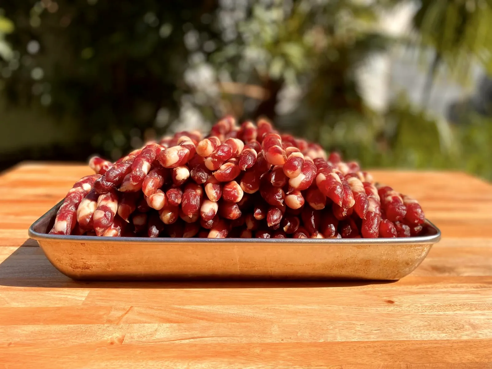
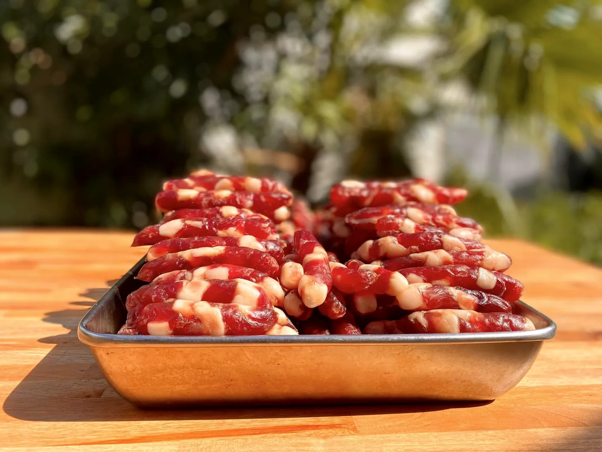
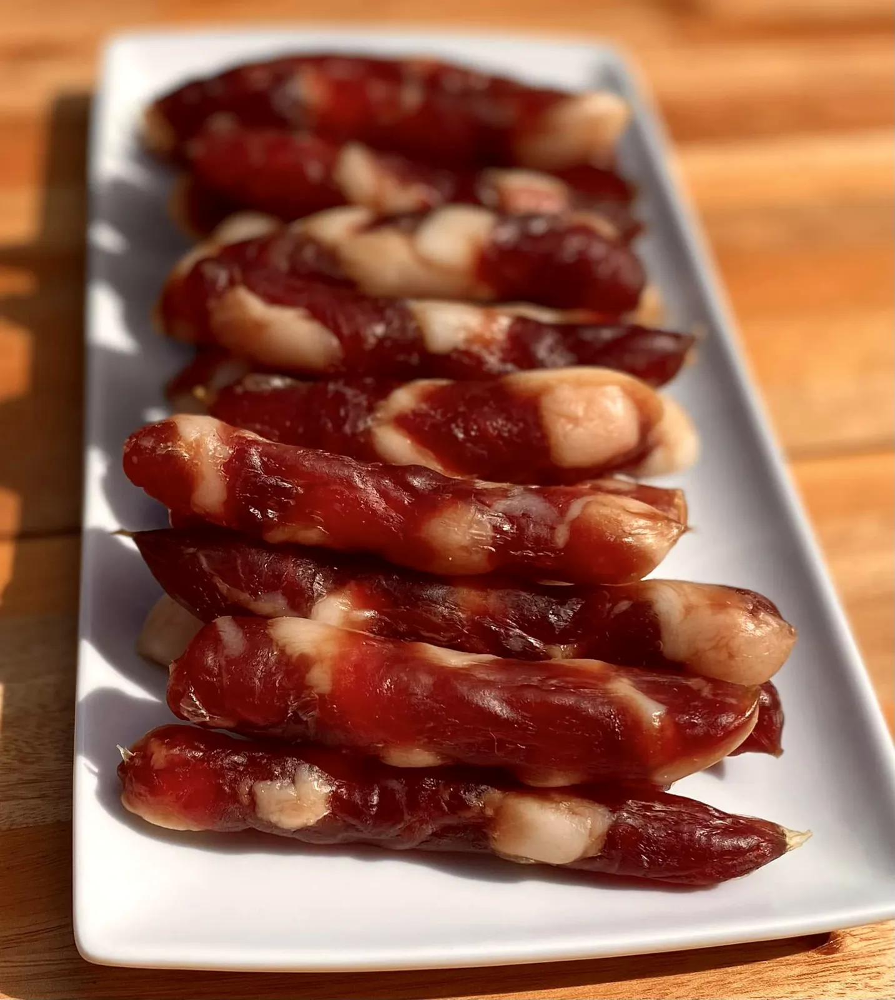
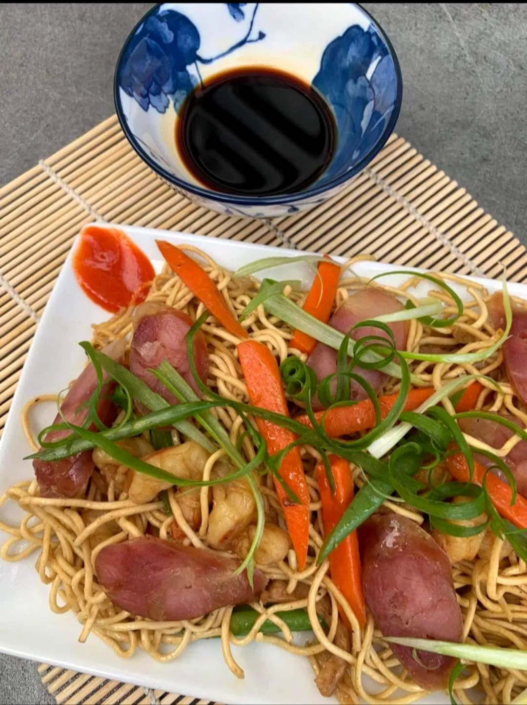

Lap-Cheong
Saucisse chinoise artisanale, sur commande
Artisan traiteur à Saint-André. Vos plats arrivent directement chez vous ou sur un point de rendez-vous, deux jours par semaine.
La maison Lap-Cheong
Saucisse chinoise artisanale sur commande, unique sur l'île.
Lap-Cheong, c'est le nom de la saucisse chinoise, et c'est tout le savoir-faire de la maison. Un artisan traiteur de Saint-André qui prépare sa saucisse chinoise sur commande, puis la livre à travers La Réunion : chez vous, ou sur un point de rendez-vous.

De l'atelier à l'assiette
Le goût de la saucisse chinoise
Brillante, parsemée de son gras nacré, elle se tranche finement pour l'apéritif, se poêle ou s'invite dans un sauté de nouilles.



← glissez pour voir la suite →
Livraison
Deux jours de livraison chaque semaine
Lap-Cheong livre vos plats directement chez vous ou sur un point de rendez-vous. Il suffit de commander par téléphone.
Vendredi
Livraison dans le sud
Le vendredi est réservé au sud de l'île.
Samedi
Livraison sur toute l'île
Le samedi, Lap-Cheong fait le tour de La Réunion.
Ils en parlent
Le goût de la maison
Saucisses au goût très authentique (c'est à dire comme celles que je mangeais à la maison il y a 30 ans)
Guillermo, avis sur la page Facebook de Lap-Cheong
Merci pour ces délicieuses saucisses chinoises!!! Le goût lé là oté!!!
Vally, avis sur la page Facebook de Lap-Cheong
Les fêtes avec Lap-Cheong
Pour Noël, la saucisse chinoise à table
Pour le réveillon ou les repas de famille, réservez votre saucisse chinoise artisanale à l'avance : un petit message à Lap-Cheong pour organiser votre commande des fêtes et son jour de livraison.
La table du réveillon
La saucisse chinoise artisanale pour l'apéritif ou le plat de fête, à partager en famille.
Un cadeau gourmand
Une commande de saucisse chinoise à offrir aux amateurs : un goût authentique qui fait plaisir.
Livrée chez vous
Le vendredi dans le sud, le samedi sur toute l'île : votre commande arrive au plus près de vous.
Commander
Une envie de saucisse chinoise ?
Artisan traiteur
Saucisse chinoise artisanale sur commande, livrée deux jours par semaine depuis Saint-André.